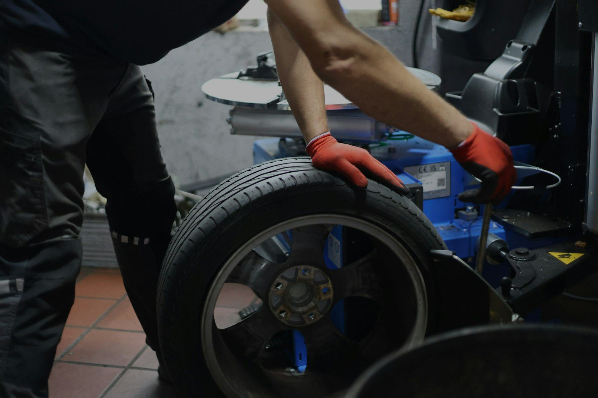
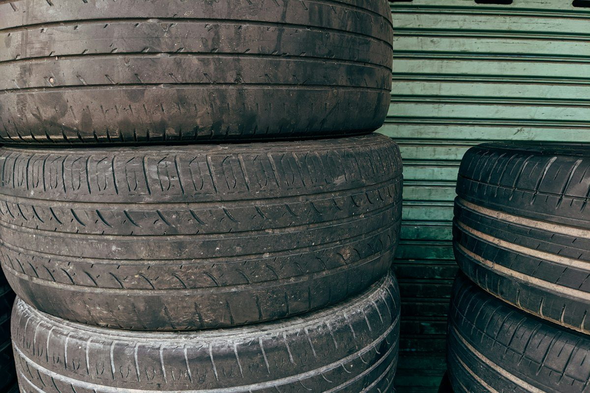
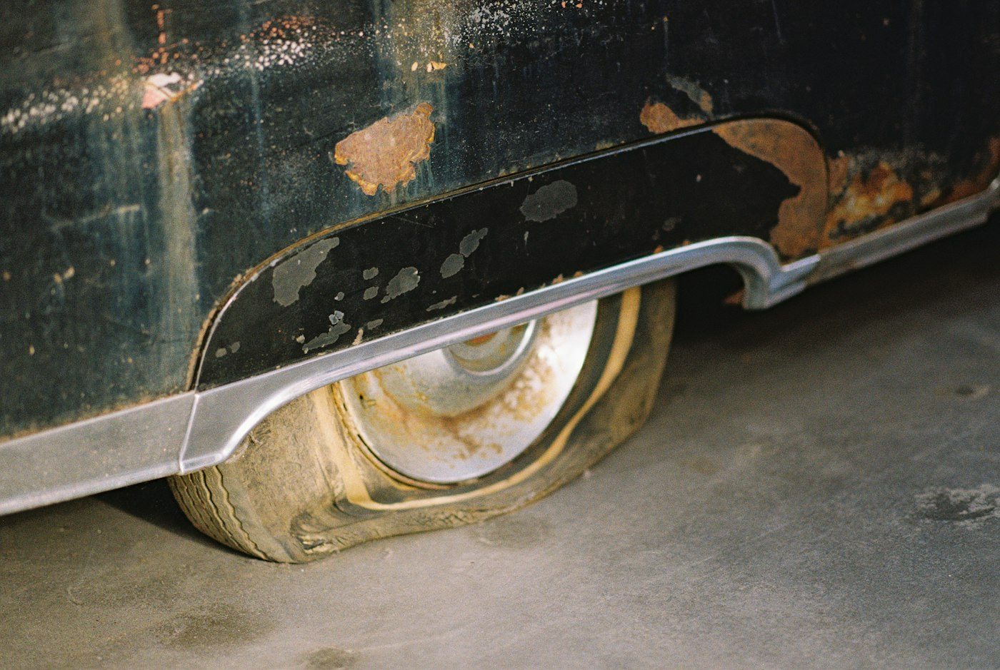
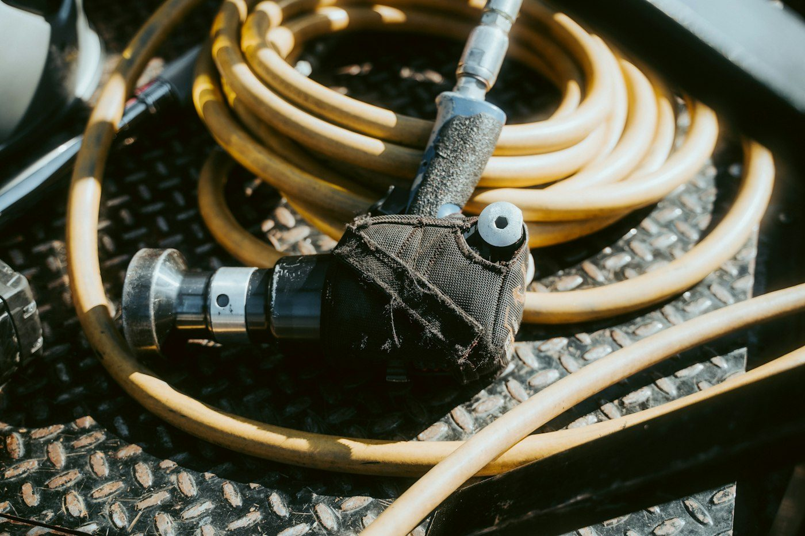
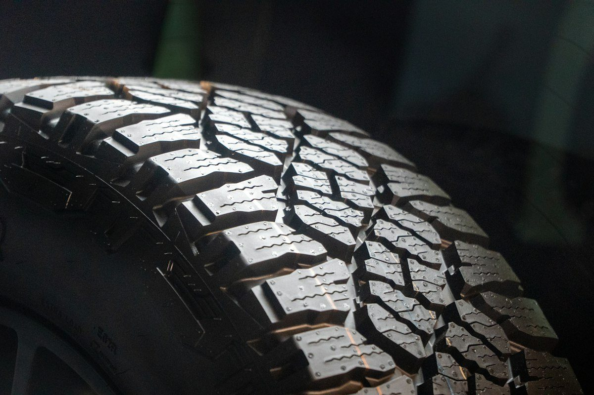
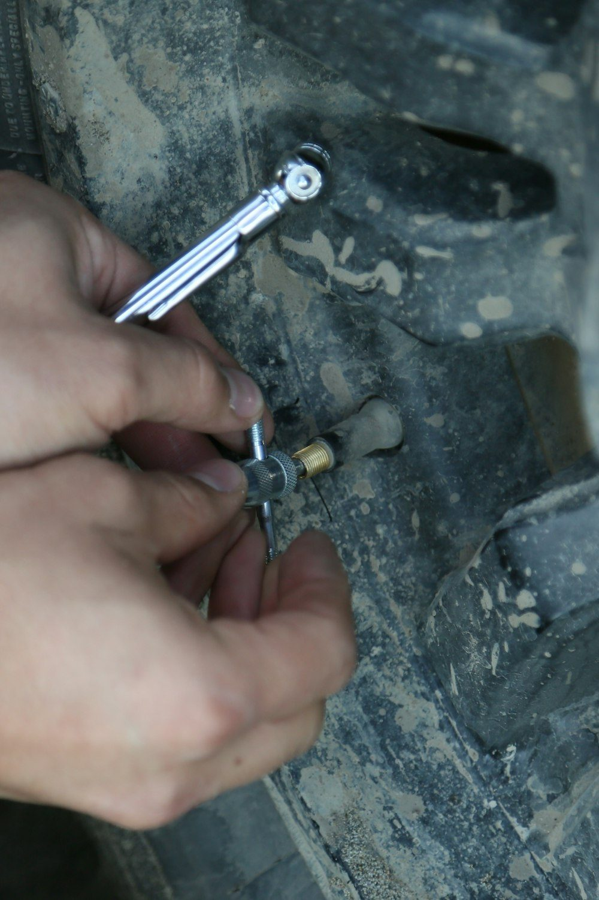
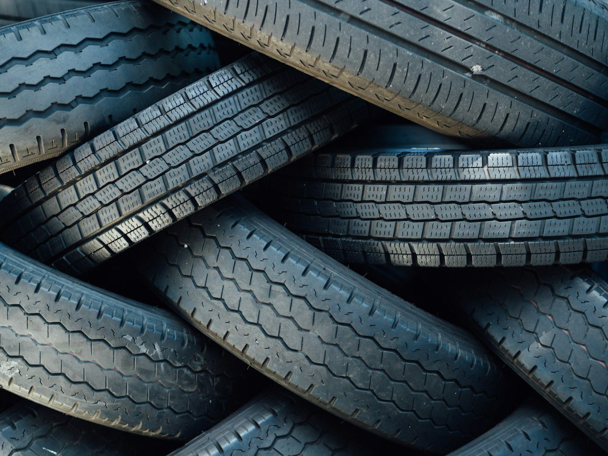

Flats fixed and tires fitted in Amarillo.
A & J Flat Shop is a tire shop at 1600 SE 27th Ave. Call the shop or roll in with the tire that is giving you trouble.
- Mon to Fri 8:30 to 6
- Sat 8:30 to 5
- Call ahead to confirm

What we do
Two jobs, done at the shop on SE 27th Ave: fixing flats and fitting tires.

Flat repair
Tire losing air or already flat? Bring it in and we will look it over.
Tires fitted
When a tire is worn out or past fixing, we fit the next one.
Mounting and balancing
Part of fitting a tire: it goes on the wheel, then the wheel is balanced.
Not sure which one you need? Pick what your tire is doing and see the next step.
Flat or new tire?
Pick what your tire is doing. The next step shows beside it.
Got a flat?
Three steps, starting with a phone call.
Call
Ring (806) 420 5338 and tell us what the tire is doing.
Roll in
The shop is at 1600 SE 27th Ave in Amarillo.
We take a look
We look the tire over and tell you what it needs.

Shop hours
- Monday
- 8:30 to 6
- Tuesday
- 8:30 to 6
- Wednesday
- 8:30 to 6
- Thursday
- 8:30 to 6
- Friday
- 8:30 to 6
- Saturday
- 8:30 to 5
Call ahead to confirm
Call (806) 420 5338



Find the shop
Call, stop by, or leave your number and what the tire is doing.
- Call(806) 420 5338
- Directions1600 SE 27th Ave, Amarillo, TX
- Hours
Monday to Friday, 8:30 to 6
Saturday, 8:30 to 5
Call ahead to confirm.
Thanks. We have it.
We will call you back.
This is a sample site, so nothing was actually sent.